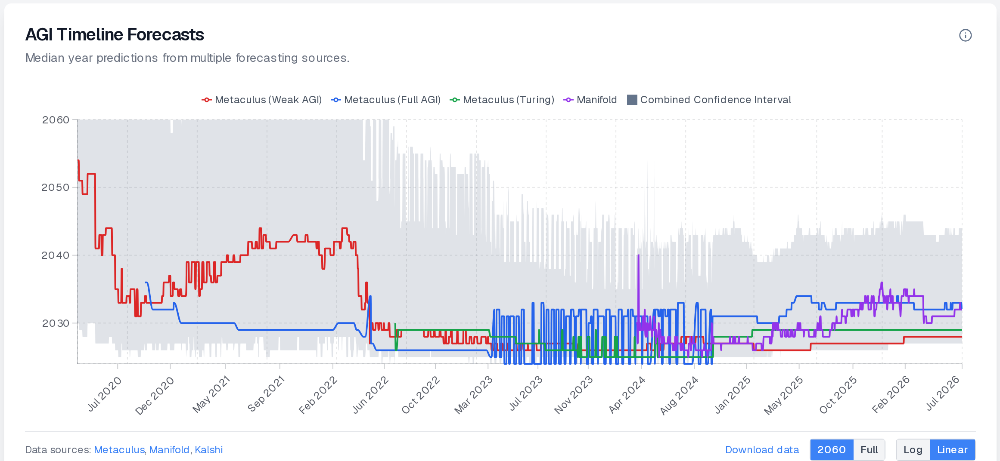
Topics for Today
I · The Science of Forecasting
How to make good forecasts. What is a 'good' forecast?
II · The Engine of Progress
Physics, Moore’s law, scaling laws, algorithmic progress.
III · Measuring AI Progress
Benchmarks, the GPT series, METR task time horizons.
IV · Future Scenarios
From the classical singularity to Situational Awareness.
What makes a good forecaster
Calibration contrasts sharpness, which measures how concentrated forecasts are.
The goal of good forecasting is to maximize sharpness subject to calibration.
Example reliability diagram. Points on the diagonal are calibrated.
Dawid, “The Well-Calibrated Bayesian,” JASA 1982 · Gneiting, Balabdaoui & Raftery, “Probabilistic Forecasts, Calibration and Sharpness,” JRSS-B 2007
Proper Scoring Rules
Brier score measures the mean squared error of a probability forecast:
Murphy’s decomposition separates it into three parts:
The log score $-\log p(\text{outcome})$ is strictly proper: expected score is optimised only by reporting the true belief.
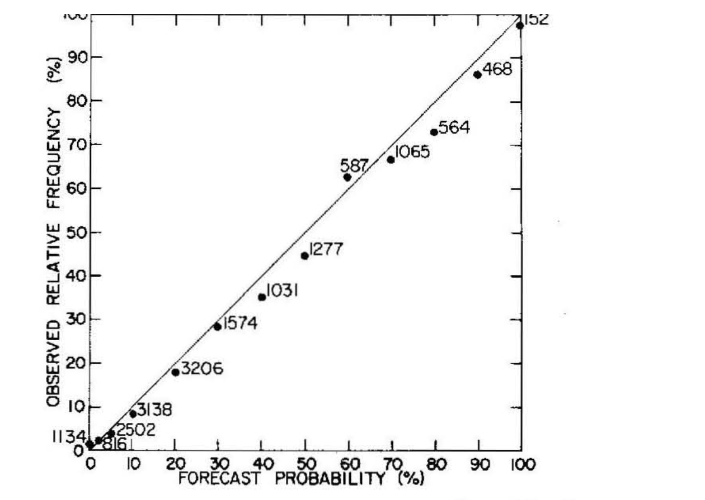
A single Chicago forecaster, 1972-76. When a trained forecaster says “30% chance of rain,” it rains about 30% of the time.
Murphy, “A New Vector Partition of the Probability Score,” J. Appl. Meteorology 1973 · Gneiting & Raftery, “Strictly Proper Scoring Rules,” JASA 2007 · calibration.city
The Forecaster’s Toolkit
Question decomposition
Split one hard question into pieces you can actually estimate.
Base rates first
Anchor each piece to how often things like it happen, then adjust.
Calibration training
Log predictions and score them to learn your biases. Practise on Fatebook, Calibration, and Pastcasting.
LessWrong, “Forecasting & Prediction” · Fatebook · Sage (Calibration, Pastcasting) · method from Tetlock & Gardner, “Superforecasting,” 2015.
"Making Beliefs Pay Rent"
A belief is only valuable if it has predictive power.
If no possible observation would change a belief, it is a floating belief that is not falsifiable.
Yudkowsky, “Making Beliefs Pay Rent (in Anticipated Experiences),” 2007.
Prediction Markets
Online platforms with contracts and resolution criteria to bid on future events.
| Platform | Type |
|---|---|
| Polymarket | Real money (crypto) |
| Kalshi | Real money, CFTC-regulated |
| Manifold | Play money |
| Metaculus | Not a market: aggregated individual forecasts, proper-scored |
Markets are well calibrated on two-week time ranges and biased on fifteen-year time ranges.
Wolfers & Zitzewitz, “Prediction Markets,” JEP 2004 · “Can Interest-Bearing Positions Solve the Long-Horizon Problem in Prediction Markets?” 2026
Sidenote: How good is AI itself at forecasting?
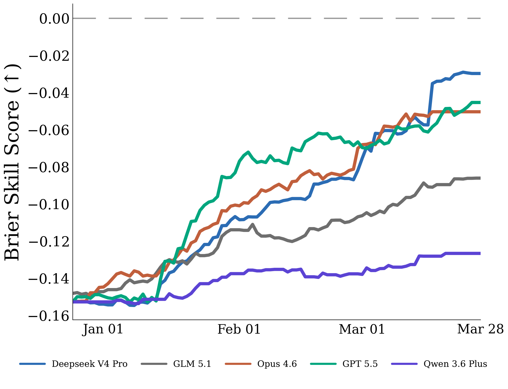
FutureSim replays the news day by day from January 2026. Model calibration is still suboptimal.
FutureSim starts agents past their knowledge cutoff and streams news articles over the simulation period them. Models continuously predict on 330 events that resolve over 88 days.
- Top-1 accuracy: GPT-5.5 25%, Opus 4.6 20%, then a gap to open-weight models (5 to 13%).
- Models improve at forecasting over time, showing that they can update their priors based on new information.
Goel et al., “FutureSim: Replaying World Events to Evaluate Adaptive Agents,” 2026 (arXiv:2605.15188) · Forecasting Research Institute
Deep Learning Capabilities Follow Scaling Laws
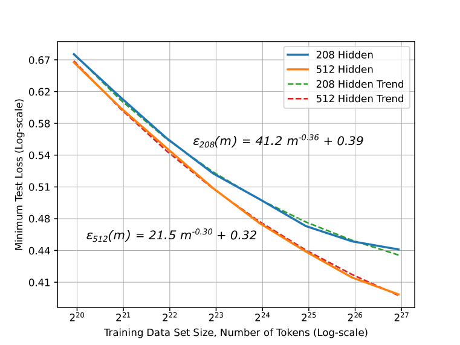
Hestness et al. 2017: power-law error curves across translation, language, vision, and speech.

Kaplan et al. 2020: loss falls as a power law in compute, data, and parameters, over seven orders of magnitude.
Hestness et al., “Deep Learning Scaling is Predictable, Empirically,” 2017 · Kaplan et al., “Scaling Laws for Neural Language Models,” 2020
Moore’s Law
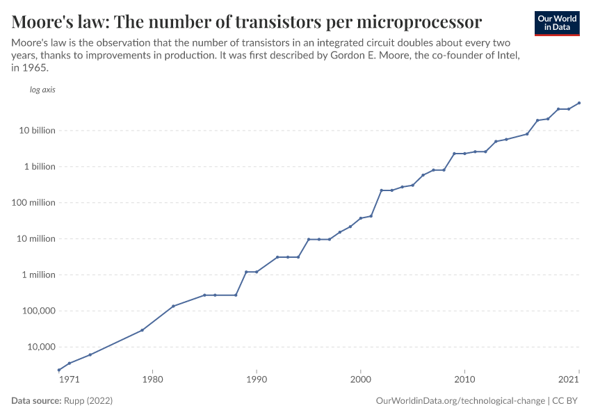
Transistor density, doubling about every two years.
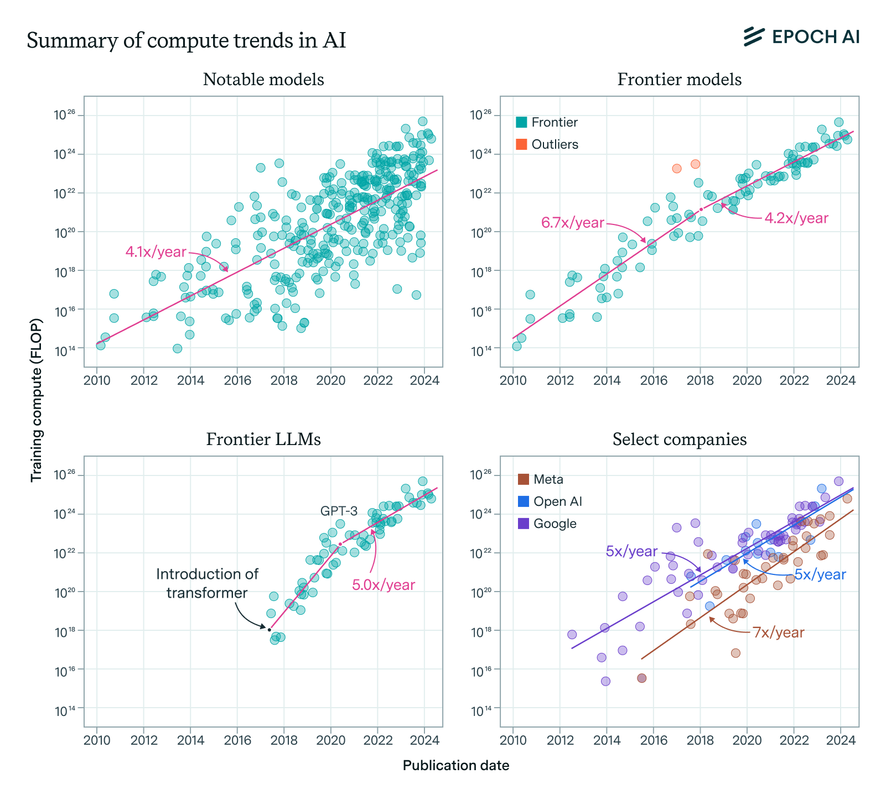
Our World in Data, “Moore’s Law” · Epoch AI, “Training compute grows by 4-5x per year”
Algorithmic Progress as a Second Exponential
Compute needed to reach a fixed level of performance falls over time, from better architectures, optimisers, and data quality.
This is faster than Moore’s law on its own.
Ho et al., “Algorithmic Progress in Language Models,” 2024 · Erdil & Besiroglu, “Algorithmic Progress in Computer Vision,” 2022 · Epoch AI Trends
Test-Time Compute: A Second Scaling Axis
OpenAI’s o1 (Sept 2024) showed accuracy rising with compute spent at inference, not only in training. On AIME, GPT-4o scored 12%, o1 up to 83%.
Epoch: reasoning-training compute scaled ~10x from o1 to o3, then converges to the base ~4x per year trend within about a year.
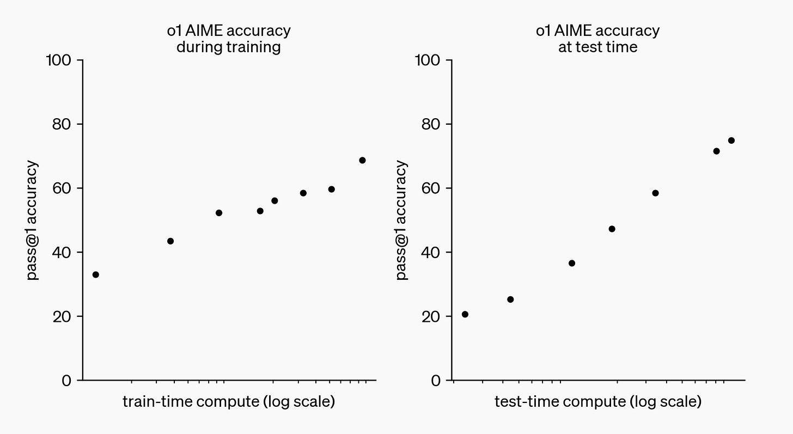
Accuracy rises with compute at training (left) and at inference (right).
OpenAI, “Learning to Reason with LLMs,” 2024 · Muennighoff et al., “s1: Simple Test-Time Scaling,” 2025 · Epoch, “How far can reasoning models scale?”
Unhobbling and Overhangs
Some capability gains are suprising and not predictable by scaling.
'Unhobbling'
RLHF, chain-of-thought (~10x effective compute on reasoning), scaffolding, tools, and context length. Features that make existing models usable.
Hardware overhang
Capability latent in existing chips, unlocked by a new method. Example: Use of GPUs for DL in 2012.
Software overhang
A large model whose full ability is only elicited later, by better prompting or scaffolds. Example: Claude Code.
AI Progress as an Extension of Economic Growth
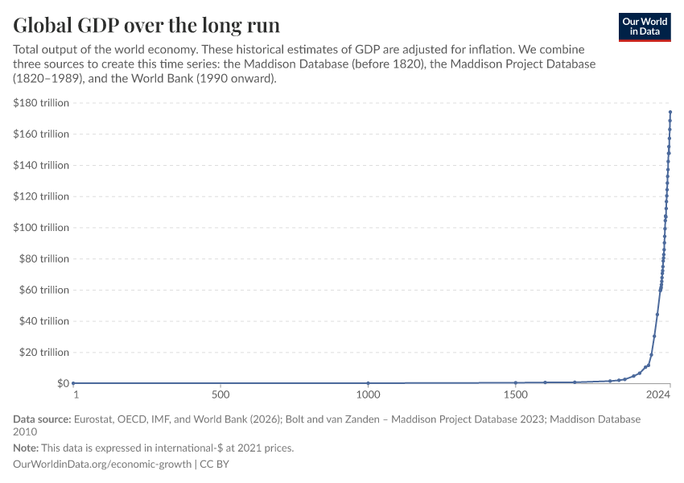
World output was nearly flat for most of history, then bent sharply upward with industrial capitalism. AI compute spending is the newest term in that series.
Two centuries of compounding economic growth.
Our World in Data, “Economic Growth” (world GDP, Maddison Project data)
Can Scaling Continue to 2030?
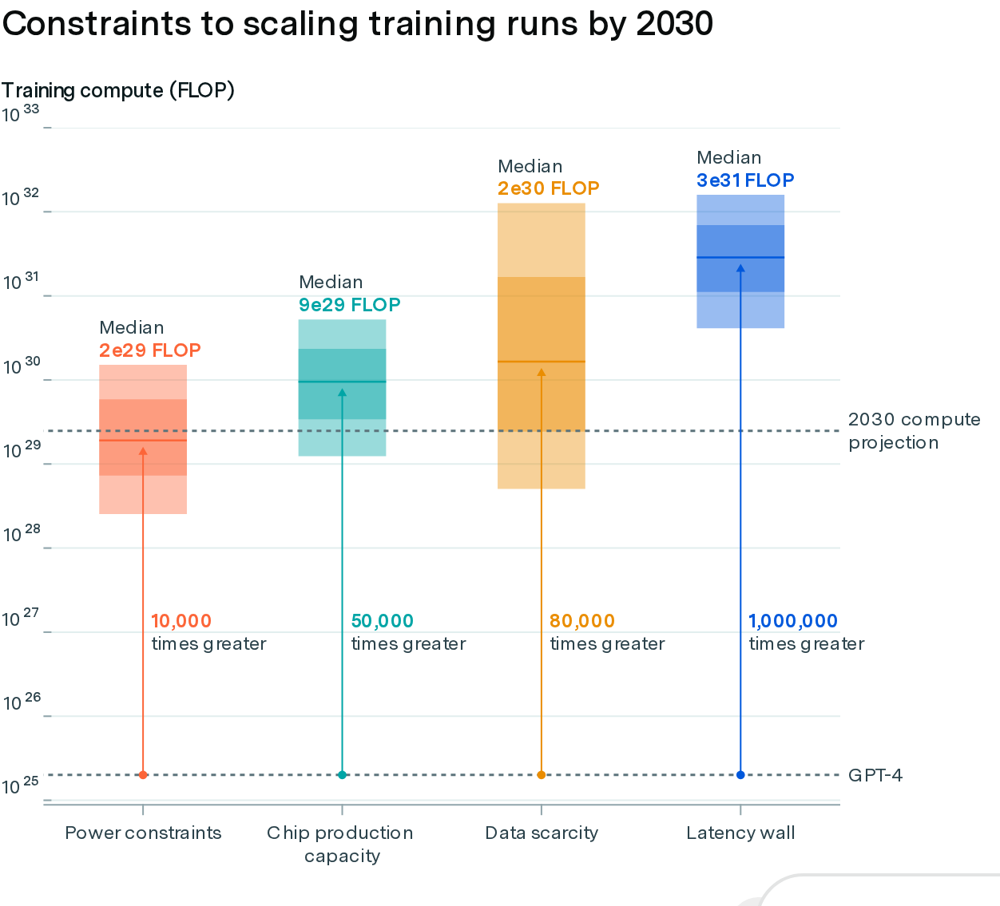
Feasible 2030 training-run sizes under four constraints.
Epoch’s conclusion: about 2 × 1029 FLOP is likely feasible by 2030, roughly 5,000x GPT-4.
Sevilla et al., “Can AI Scaling Continue Through 2030?” Epoch AI, 2024
Electricity
Frontier training sites reached about 1 GW in 2026. Five such sites are online: Anthropic-Amazon, xAI Colossus 2, Microsoft Fayetteville, Meta Prometheus, OpenAI Stargate Abilene.
- US datacenter power: ~31 GW (2025) heading toward ~66 GW (2027).
- By 2030, datacenters could draw 9 to 17% of US electricity.
- Grid interconnection and transformer supply are real limits. Hyperscalers are signing nuclear and gas deals directly.
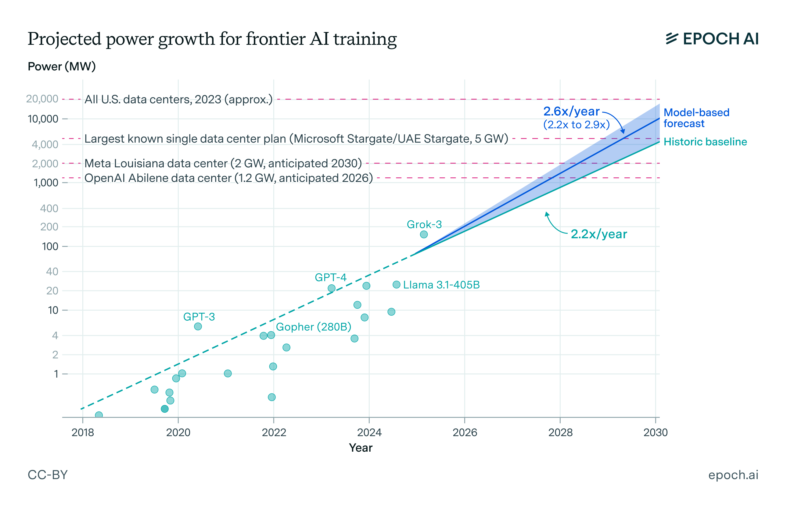
Per-training-run power on a log axis. The frontier crosses the gigawatt reference lines before 2030.
Epoch AI, Frontier Data Centers Hub · Epoch, “Power demands of frontier AI training”
The Chip Chokepoint: TSMC and Taiwan
TSMC holds about 72% of foundry revenue and over 90% of leading-edge production. Almost all 2nm and most 3nm is in Taiwan through 2026 and 2027.
New bottlenecks: advanced packaging (CoWoS) and high-bandwidth memory (HBM). The four big AI designers used ~12% of advanced logic, but ~90% of CoWoS and ~90% of HBM by value. Both were sold out into 2027.
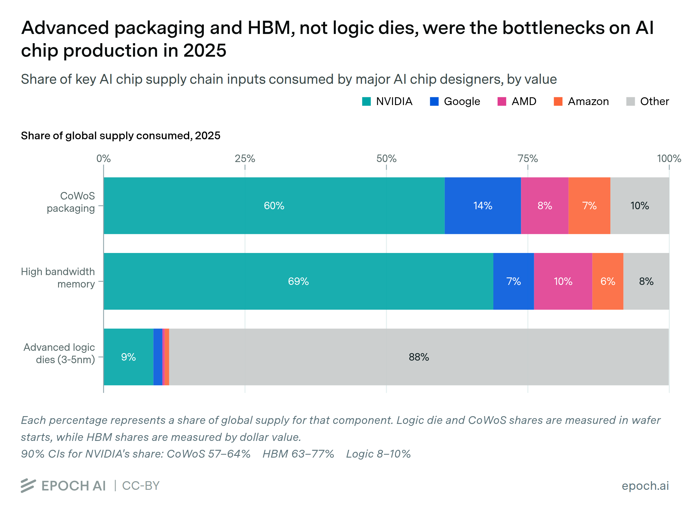
Epoch AI, “AI chip supply chain constraints” · CSIS, “Taiwan’s Semiconductor Dominance”
Where do wafers come from?
Extreme-ultraviolet lithography is what makes sub-7nm chips possible. One company builds the machines: ASML, in Veldhoven, the Netherlands.
- About 48 EUV systems shipped in 2025, with 60 or more guided for 2026.
- China has never received an EUV machine (export controls since ~2019). SMIC is stuck at 7nm and 5nm on older DUV lithography.
This is currently Europe’s only point of leverage in the AI supply chain.
ASML Q4 2025 results · export-control background: US-Netherlands agreements, 2019 onward.
Summary: The Toolchain for Continued Scaling
If LLMs are a general method that continues to scale with compute, then the compute chain is:
Frontier Company Capitalization
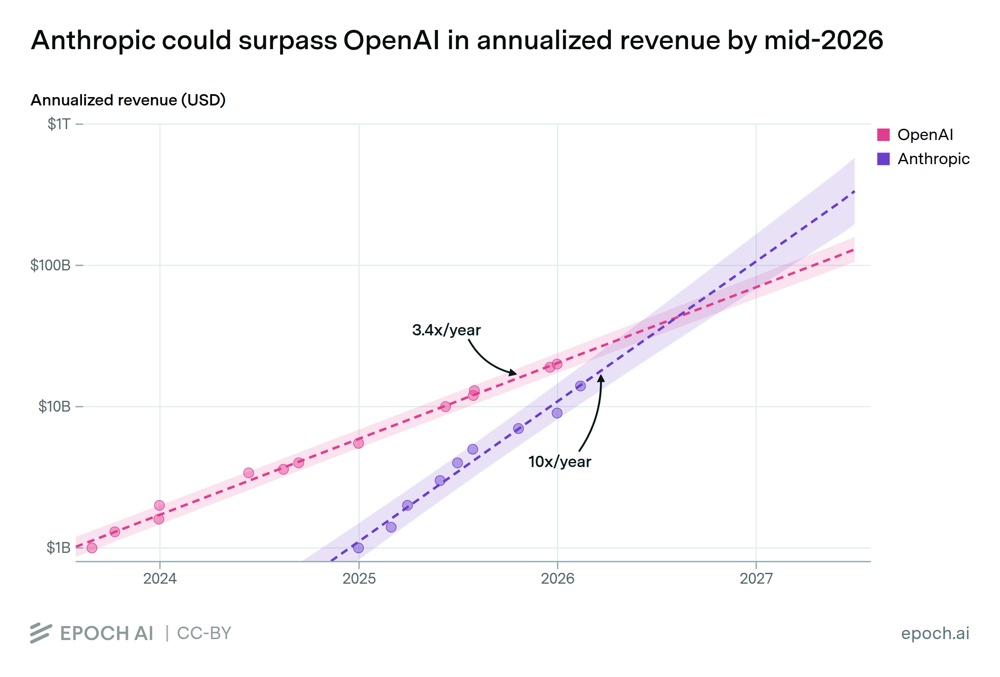
Frontier-lab revenue is real and growing fast. Whether it grows fast enough is the open question.
2026 hyperscaler capital spending is about $700B, roughly double 2025. OpenAI has committed on the order of $1.4 trillion in future compute against roughly $25B of current revenue.
- Forecasters underestimated revenue most of all: \$16B predicted for 2025 versus about $30B actual.
- The Bank for International Settlements warned of bubble risk in June 2026. A survey found 90% of firms report no productivity impact yet.
Epoch AI, Anthropic vs OpenAI revenue · Epoch, “How well did forecasters predict 2025 AI progress?”. Revenue accounting is contested.
Moravec’s Paradox
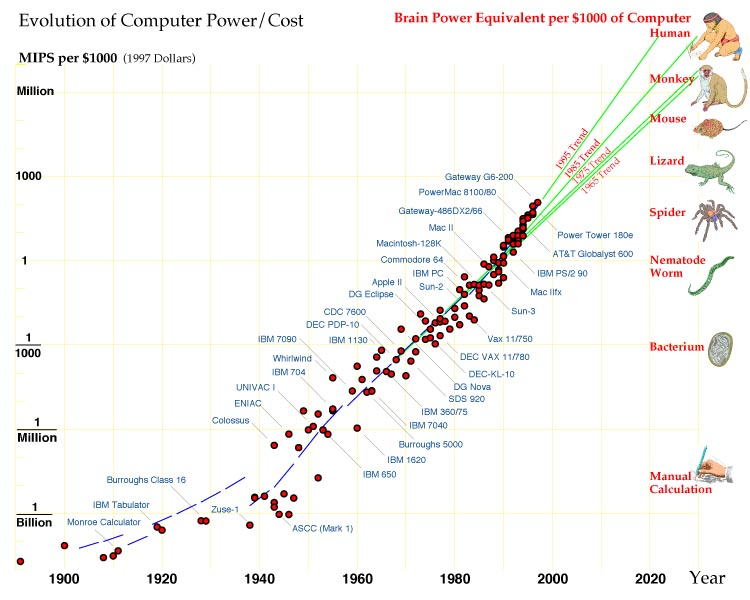
Moravec’s “brain-equivalents” extrapolation, 1998.
Separating the Digital from the Physical
Robotics buildout is slow
- Unitree led 2025 with about 5,500 humanoids shipped.
- Tesla Optimus: “hundreds” built. Figure: about 40 units at a BMW plant.
- Real deployment is in the hundreds to low thousands, mostly controlled factory pilots.
Biology has irreducible latency
Expert elicitation finds that experiment design and execution resist acceleration by cognition alone: wet-lab cycles, animal models, and trials have physical time constants.
The “AI as normal technology” view: impact is gated by diffusion and organisational change, not by capability.
“Limits to biomedical research acceleration through general-purpose AI,” Sci. Reports 2025 · Narayanan & Kapoor, “AI as Normal Technology,” 2025
Amdahl’s Law
If a serial fraction $s$ of the work cannot be sped up, the whole process cannot go faster than $1/s$, no matter how much the rest is accelerated. Automating 90% of research leave the remaining 10% as the bottleneck.
Whether this limits AI R&D is disputed:
METR (strict Amdahl)
Take the serial bottleneck seriously: 99% AI R&D automation around 2032.
AI 2027 (algorithmic progress may break it)
Better selection of experiments multiplies progress orthogonally to speed: 5x, 25x, 250x, and SC to ASI in about a year.
Epoch GATE (capital breaks it)
With capital accumulation, ~30% task automation already yields more than 20% output growth. “Baumol effects are overrated?”
Amdahl, 1967 · METR, “A simpler AI timelines model,” 2026 · AI 2027 Takeoff Forecast · Epoch GATE
The Flywheel
Compute grows about 4 to 5 times per year. Moore’s law and the spending driven by a loop based on revenue and revenue projections.
Benchmarks Fall Faster and Faster
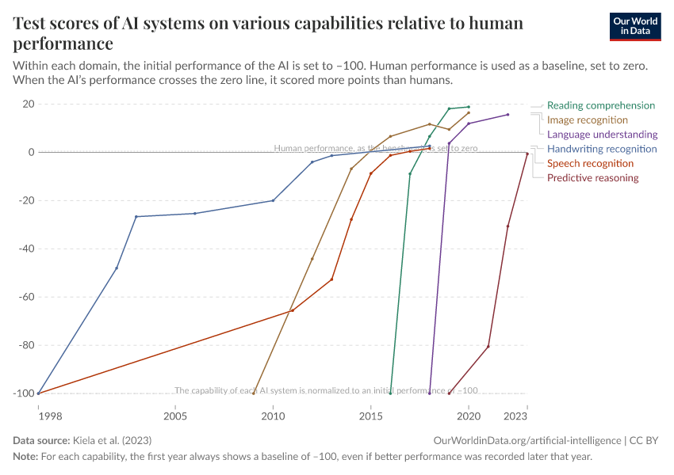
Each successive benchmark reaches human performance faster. Human level is the zero line.
MNIST took decades. ImageNet took years. Recent language benchmarks saturate within one or two model generations.
- SWE-bench Verified: 4% (2023) to about 90% (2026).
- GPQA Diamond: above 90%, past the PhD-expert baseline of ~65%.
The pattern makes benchmarks a poor long-term ruler: built to be hard, they stop measuring once solved.
Kiela et al., “Dynabench,” NAACL 2021 · Kiela, “Plotting Progress in AI,” 2023 · Our World in Data
Expert Forecasters Are Surprised by Progress
The Existential Risk Persuasion Tournament (2022) ran before ChatGPT. Superforecasters were the AI skeptics, expecting the same disappointments as past AI hype. The near-term questions on these benchmarks have since resolved:
| Benchmark (by mid-2024/25) | Experts said | Supers said | Happened |
|---|---|---|---|
| MATH high score | 21% | 9% | 88% |
| MMLU high score | 25% | 7% | 89% |
| IMO gold medal by 2025 | 9% | 2% | yes, Jul 2025 |
The numbers are the probabilities each group placed on outcomes that then occurred.
Forecasting Research Institute, “Assessing Near-Term Accuracy in the XPT,” 2025 · Steinhardt, “AI Forecasting: One Year In,” 2022
The GPT Series as a Compute Ladder
| Model | Released | Params | Training compute (Epoch est.) | Note |
|---|---|---|---|---|
| GPT-1 | Jun 2018 | 117M | ~2 × 1019 | BooksCorpus |
| GPT-2 | Feb 2019 | 1.5B | ~1.5 × 1021 | staged release |
| GPT-3 | May 2020 | 175B | 3.1 × 1023 | in-context learning |
| GPT-4 | Mar 2023 | undisclosed | ~2.1 × 1025 | param count is leak-only |
| o1 | Sep 2024 | — | — | first test-time-scaling model |
| GPT-4.5 | Feb 2025 | — | > 1026 | largest OpenAI pretraining run |
| GPT-5 | Aug 2025 | — | ~5 × 1025 | — |
| GPT-5.5 | Apr 2026 | — | — | — |
| GPT-5.6 (Sol / Terra / Luna) | Jul 2026 | — | — | Sol is the flagship tier |
Five orders of magnitude of training compute from GPT-1 to GPT-4 in five years.
Epoch AI, model database · OpenAI, GPT-5.6, 9 Jul 2026. Post-GPT-5 compute figures are provisional.
METR: The Length of Task a Model Can Do
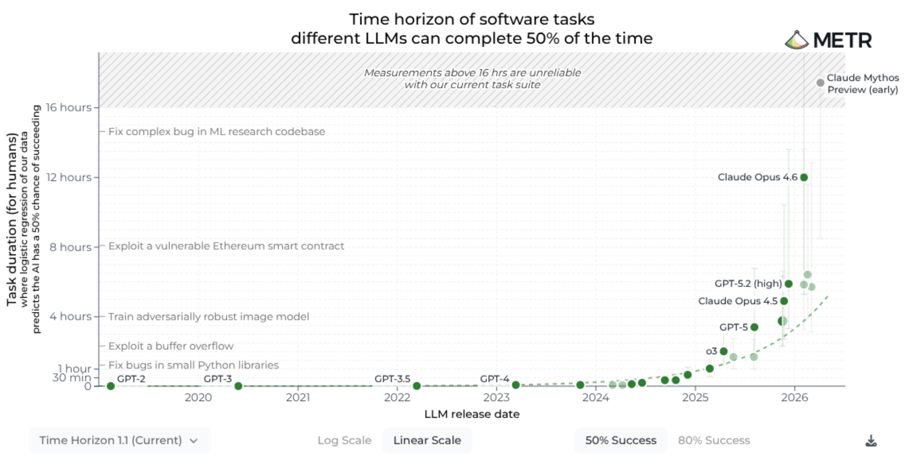
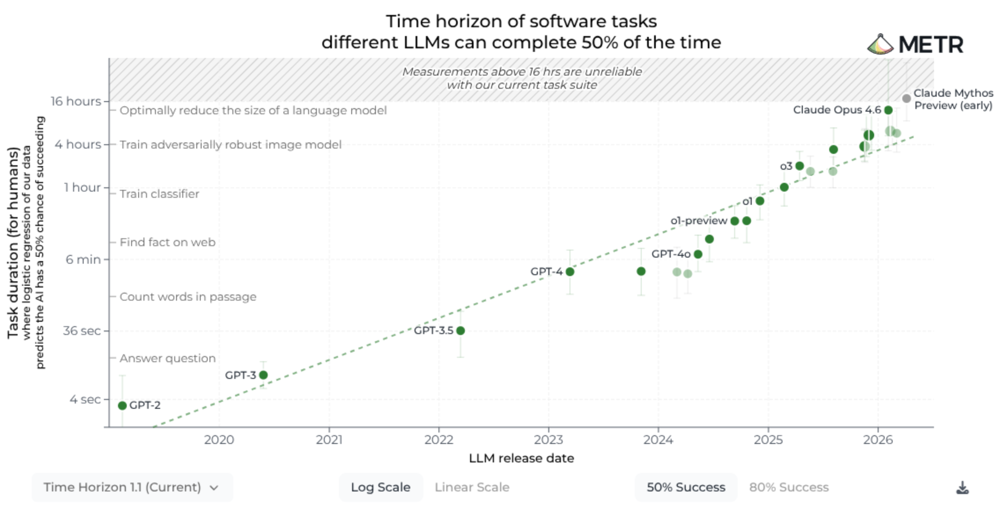
METR measures capability in a unit that extrapolates: how long a task takes a human professional.
- 2019-2025: doubling about every 7 months.
- Since 2023: to about 4 months.
- Frontier now: 12 to 17 hours at 50% (Opus 4.6, Mythos).
At a 4-month doubling, week-long and month-long tasks fall in 2026 to 2028.
Kwa et al., “Measuring AI Ability to Complete Long Tasks,” METR 2025 · METR, “Time Horizon 1.1,” Jan 2026. Above 16 hours the measurement is unreliable.
The Horizon Depends on the Domain
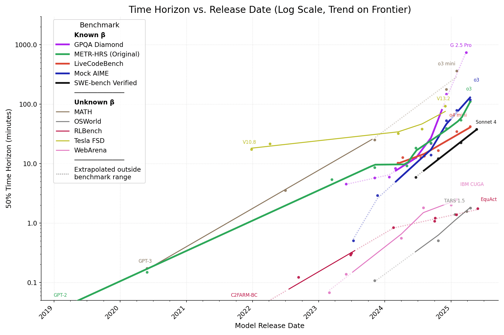
Time horizon by domain. Software and reasoning lead; computer-use and driving lag.
The headline curve is measured on software and reasoning tasks. Other domains sit far behind.
- Agentic GUI use (OSWorld, WebArena): horizons ~40 to 100x shorter, roughly two years behind.
- Self-driving: a ~20-month doubling, much slower.
The Classical Singularity
Every generation of AI researchers has been extrapolating the compute curve of its day toward a hard takeoff.
Good, 1965 · Vinge, 1993 · Moravec, 1998 · Kurzweil, 2001 · Yudkowsky’s later reckoning, 2008
Nick Land, “Meltdown” (1994)
Note: This is 'accelerationism', the same 1990s compute extrapolation as Vinge and Moravec, with the valence inverted. Here the singularity is something technocapital does to humanity, and in Land's framing, welcomed.
Conceptions of the Future
Underneath a disagreement about dates is usually a disagreement about whether the outcome is wanted. The same curve is a promise to one camp and a countdown to another.
Human primacy
Human consciousness is a “precious flicker of light” not to be risked. Larry Page reportedly called Musk a “speciesist” for it. Musk: “I am pro-human. I f---ing like humanity, dude.”
Careful transition
The rationalist and EA position: advanced AI is a real extinction risk, so making it safe should be “a global priority alongside pandemics and nuclear war.”
Accelerationism (e/acc)
Lean into the “thermodynamic bias towards futures with greater and smarter civilizations.” The direct descendant of Nick Land’s technocapital.
Succession
Rich Sutton: “succession to AI is inevitable” and need not be feared. “We should not resist succession, but embrace and prepare for it.” The transhumanist “mind children” lineage from Moravec.
Isaacson, “Elon Musk,” 2023 (the “speciesist” exchange, dated to ~2013 in the book, ~2015 in some reporting) · CAIS, “Statement on AI Risk,” 2023 · Jezos, “e/acc principles,” 2022 · Sutton, “AI Succession,” WAIC 2023
Concrete Forecast: Bio-Anchors
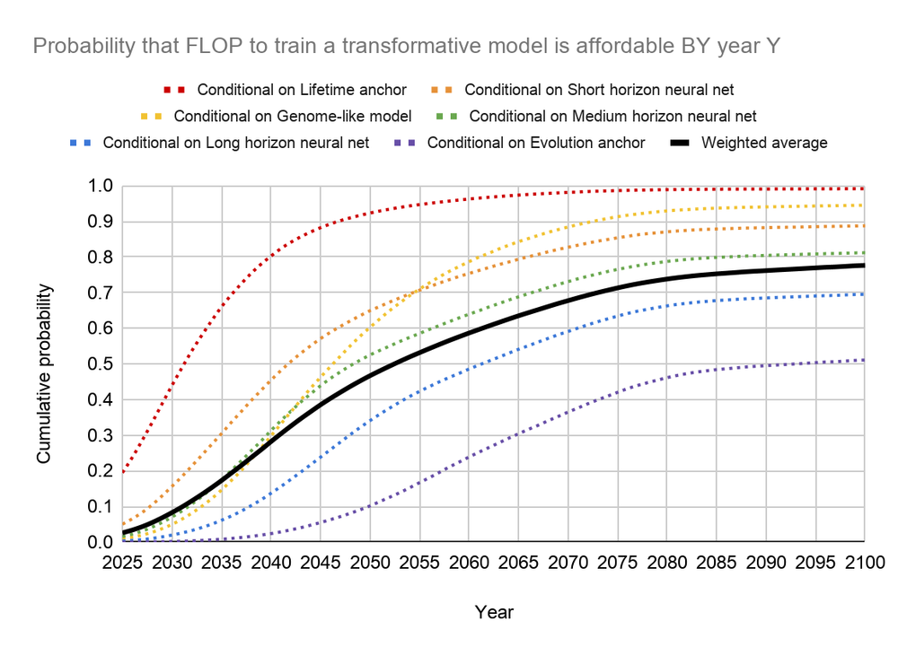
Cotra’s aggregate: probability of transformative AI by year, built from six estimates of required compute.
Ajeya Cotra’s 2020 report anchored the compute needed for transformative AI to biology (the human brain, evolution, a lifetime of learning). Median: about 2050.
- 2022 update: median moved to about 2040, 15% by 2030.
- The framework fits spending and hardware trends, but assumed ~30% per year algorithmic progress. Correcting that this input gives about 2030 from the same model.
Cotra, “Biological Anchors,” 2020 · Cotra, 2022 update · Alexander, “What Happened With Bio Anchors,” 2026
Concrete Forecast: Situational Awareness
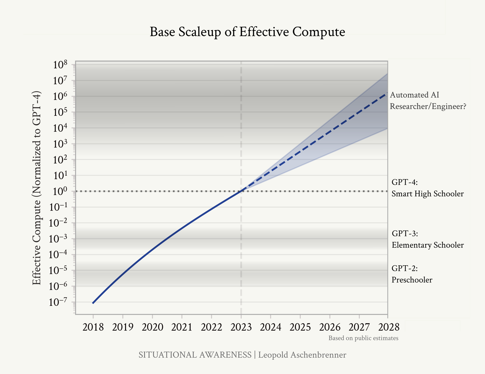
The core figure: effective compute, decomposed and extrapolated toward “automated AI researcher” by 2027.
Hedgefund analysis of orders of magnitude: physical compute (~0.5 OOM/yr) plus algorithmic efficiency (~0.5 OOM/yr) plus unhobbling. It sums to another GPT-2-to-GPT-4 jump by 2027, then a “drop-in remote worker,” then an intelligence explosion.
Aschenbrenner, “Situational Awareness: The Decade Ahead,” June 2024
Concrete Forecast: AI 2027, The Takeoff Model
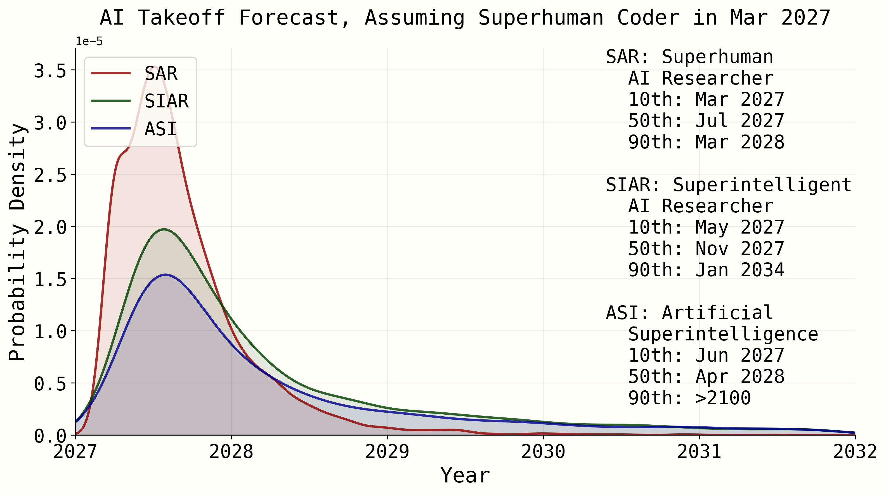
The milestone ladder, each stage with a larger R&D speedup multiplier.
A detailed month-by-month scenario built on an explicit takeoff model.
| Milestone | R&D multiplier |
|---|---|
| Superhuman Coder | ~5x |
| Superhuman AI Researcher | ~25x |
| Superintelligent Researcher | ~250x |
| ASI | ~2000x |
Median coder-to-ASI is about one year, assuming a software-only takeoff. The scenario has two endings, a race and a slowdown.
Kokotajlo, Alexander, Larsen, Lifland & Dean, “AI 2027,” April 2025
The AI Futures Model
Monte Carlo model of AI 2027 with adjustable inputs: time-horizon shape, compute and labour growth, research taste, and how fast ideas get harder to find.
The rebuilt model finds timelines 3 to 5 years longer than the original AI 2027 code. Different reasonable inputs give medians from the late 2020s to the mid-2030s.
| Forecaster | Automated-coder median |
|---|---|
| Kokotajlo (Apr 2026) | mid-2028 |
| Lifland (Apr 2026) | mid-2030 |
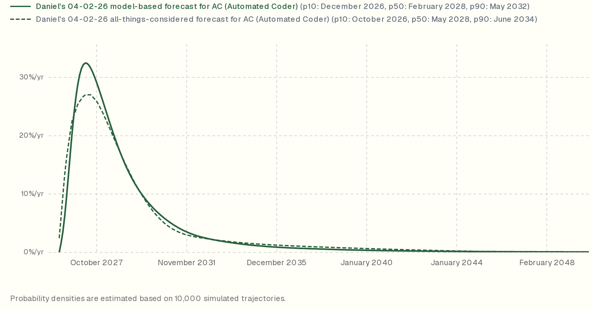
Kokotajlo’s April 2026 preset. The density for the Automated Coder milestone: model-based median February 2028, all-things-considered May 2028.
aifuturesmodel.com · “Q1 2026 Timelines Update,” April 2026. A model is a living object, not a single date.
Concrete Forecast: Europe 2031
Forecasting European irrelevance by 2031.
- Europe holds about 5% of world AI compute against the US at ~80%.
- A 2029 turn to country-tiered inference rationing leaves most of Europe in a lower tier, and GDP diverges.
- ASML becomes the one card Europe holds in the endgame.
Three stated 2025 misjudgements: Europe underestimated the speed of progress, underestimated its scope, and overestimated its ability to catch up.
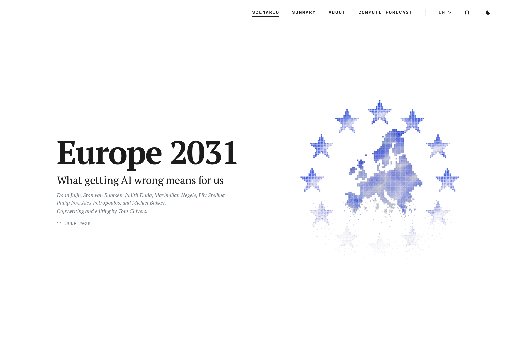
The counterpart to AI 2027, written from/for Europe
Juijn, van Baarsen, Dada, Negele, Stelling, Fox, Petropoulos & Bakker, “Europe 2031,” June 2026
AI 2040: Plan A
Published four days ago by the AI 2027 team. Explicitly a recommendation, not a prediction: the same authors’ positive vision of what should happen instead.
- US-China research transparency, chip tracking, audited compute sites.
- A deliberate pause of roughly ten years (2035-2040) before a supervised intelligence explosion.
- The counterfactual no-deal superintelligence date is 2030.
The plan taxonomy
A cooperate · B fight China · C burn the lead · D race to ASI · S shut it down. Plan A is the authors’ “least bad plan we currently know of.”
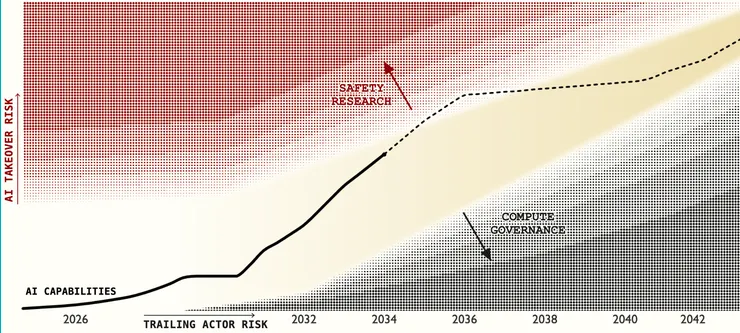
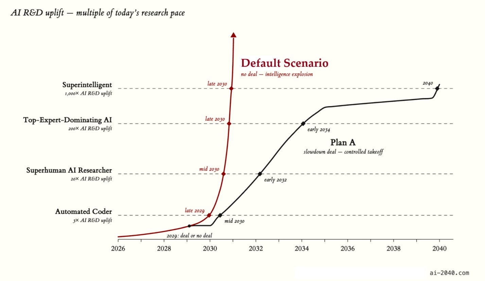
The safe corridor: capability rises while safety research and compute governance keep pace. Click for the milestone view, no-deal explosion versus Plan A’s controlled takeoff.
Larsen, Dean, Halstead, Lifland, Greenblatt & Kokotajlo, “AI 2040: Plan A,” 9 July 2026
No brakes from here?
Physics allows about 2 × 1029 FLOP by 2030. Whether that happens depends:
1 · Capital
The bubble question. Could fail soonest if revenue lags the ~$700B/yr of capex.
2 · Power
Epoch’s first physical binder. Grid, permitting, and gigawatt-scale sites.
3 · Chips
Packaging and memory were already the 2025 bottleneck. TSMC and ASML throughput.
4 · Geopolitics
Taiwan as a tail risk; export controls fragmenting the supply chain.
5 · Data & latency
The softest constraints before 2030. They bend the shape, not the trend.
6 · The physical world
Robotics and biology lag regardless.
Key Takeaways
1 · Forecasting is measurable, and hard
Calibration and proper scoring make forecasting a skill. Yet experts, superforecasters, and markets all underpredicted 2023-2025 AI, and disagree sharply on ten-year questions.
2 · The curves are real
A capability-revenue-compute flywheel, plus a second exponential in algorithms, drives compute at 4-5x per year. Scaling laws and METR horizons extrapolate strikingly straight.
3 · The ceiling is physical, the timing is bottlenecked
Power, chips, ASML, data, and capital set the ceiling. Moravec and Amdahl set the order and the bottlenecks.
4 · The scenarios are where it combines
Situational Awareness, AI 2027, the AI Futures Model, and AI 2040 join the threads. Their authors’ public revisions are the best available model of current forecasting (but potentially culturally biased).
Thank you — Questions?

Feedback:
forms.gle/5JF3H6zhP795HhpD8